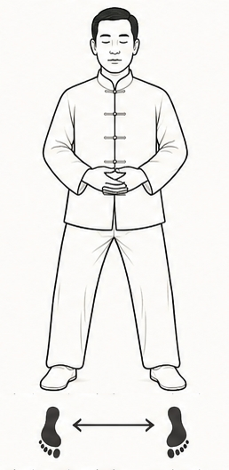

| Les premières bases du Qi Gong Posture fondamentale Ouverture - Equilibre |
|
 |
* Debout, pieds écartés à la largeur des épaules * Genoux légèrement fléchis * Bassin détendu colonne vertébrale droite * Mains devant le bas ventre (dan tian),une paume sur l'autre * Respiration naturelle, calme + Esprit centré, stabilité et enracinement |
| En cliquant sur le pratiquant vous passez d'une vue de face à une vue de profil |
|
| Revoir la Posture initiale | Voir la Posture cavalier |